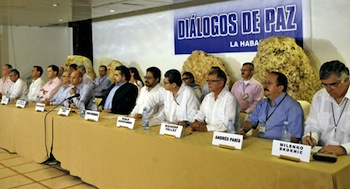
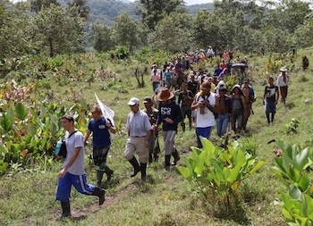

Dear Friends,
We are thankful this week for life, for our sisters and brothers in Colombia, and for you.
We are very pleased to announce the formation of the first transnational branch of the Fellowship of Reconciliation. The Fellowship of Reconciliation Peace Presence team is a continuation of the great work FOR-USA has done here in Colombia over the last 11 years. It is also a recognition of the support and solidarity that have been built - allowing us to strike out on our own, and allowing FOR-USA to refocus its work to address issues of injustice and peace-building inside the Unites States. We are and remain, first and foremost, an accompaniment organization. Read more.
By Luke Finn
Before there was Colombia, there was the extractive industry. The legend of El Dorado stems from a Spaniard, Juan Rodriguez Freyle, watching a High Priest of the Muisca getting covered in gold dust and jumping in Lake Guatavita, near Bogotá, in a religious ceremony that makes the Pope’s big hat and incense burning look fairly underwhelming. Naturally, the Spanish saw this profligacy and wrongheaded veneration of the Sun God Sue, decided that they themselves were far better placed to use all the gold responsibly, and set about destroying the complex societies that had flourished in Colombia prior. Read more.
By Emily Schmidt
Barges and cargo ships dot the distant horizon off the white shores of Santa Marta. Seated on the Caribbean Sea between sandy beaches, small fishing villages and the Sierra Nevada mountain range, Santa Marta was destined to be a centerpiece of Colombia’s growing tourism industry. In the 1980s, the region became a platform for coal exports, threatening local tourism, destroying natural habitats and traditional ways of living, dividing small communities, and pillaging mineral resources. In a country with the largest number of internally displaced people in the world, the communities in nearby La Jagua, the country’s most productive coal mining region, contain the newest experiences of forced displacement. Read more.
By Gina Spigarelli
On November 6, two weeks short of the one year mark of negotiations, the Colombian government and FARC guerrillas issued their 27th joint press release announcing a general agreement to end the armed conflict and for political participation and propelling the two sides forward through the second of their five-point negotiation plan. The agreement was hailed as a big step forward, but as any Colombian can tell you, “del dicho al hecho, hay mucho trecho.” From word to action, is a long way. Read more.
By Camilo Segura Álvarez
El Espectador accompanied a “Pilgrimage for Life” led by the Peace Community, indigenous representatives from around Colombia, human rights organizations, and international accompaniers. Some 120 people mobilized with concrete objectives: to look for the paramilitaries in their base, said by the communities to be near the village of Sabaleta; to collect eyewitness reports from people who had seen the paramilitaries in action; to discover the fate of Beunaventura Hoyos; to confront, unarmed, the paramilitaries; to hear the reasons for the threats they have made against the Peace Community; and to exercise the dignity that they have cultivated over 16 years of practicing active neutrality and non-violence in the face of the various actors of Colombia´s conflict. Here is its report. |